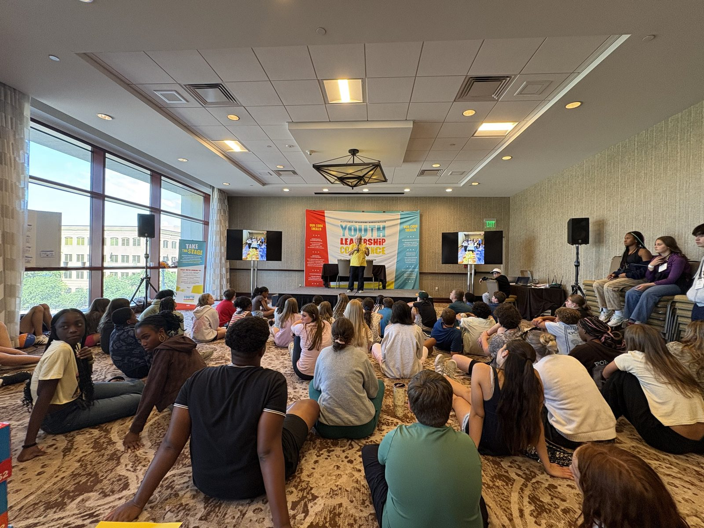
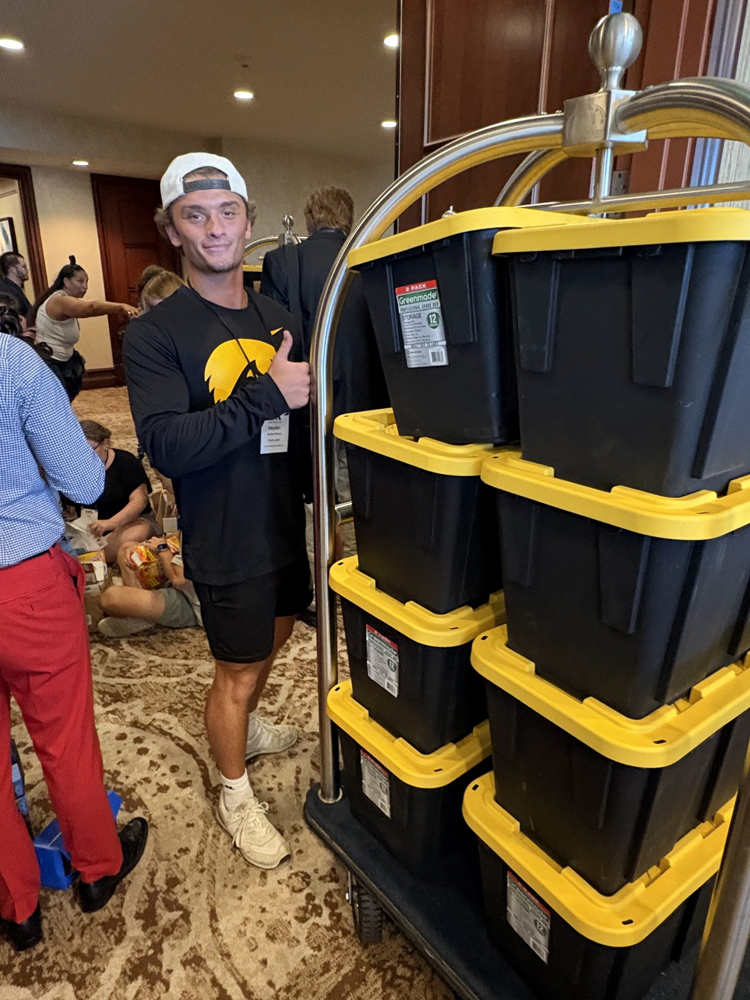
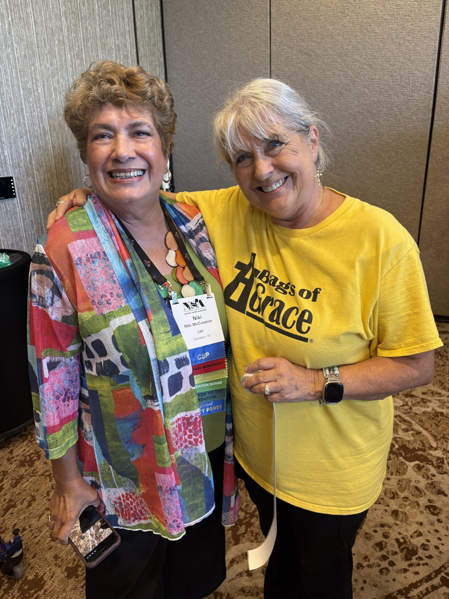

I get to serve on the board of Bags of Grace as Director of Marketing and Fundraising, and if you ever want to see the best of Austin in one room, come to a packing event. Toddlers next to grandparents. College kids next to people who have been doing this for decades. Everybody with the same job: fill a bag with what someone will need, and fill it with care.

That is the part that gets me every time. Nobody in that room is there because it looks good on a resume. They are there because they believe people deserve dignity, and dignity looks like a hot meal, clean socks, and something to read, packed by hands that thought about the person who would open it.


Packed bins ready to go, and two of the hearts behind them.
Every Sunday, those bags go to Church Under the Bridge, along with a couple of other partner nonprofits who distribute them across Austin. I love knowing that something we packed on a Saturday afternoon, surrounded by laughter and a few hundred yellow shirts, is in someone's hands by the next morning.
Serving on this board has taught me something I try to carry into every other room I walk into, including the ones at work. Love, when it is real, is not abstract. It shows up as logistics. It shows up as bins stacked on a luggage cart, as name tags and thank yous, as someone teaching a nine year old how to fold a bag properly. Grace is a feeling, but Bags of Grace is a Tuesday planning call and a Saturday full of boxes. Both parts matter.
I am endlessly grateful to be part of a group of people who love others deeply, and who show it with their hands. If you are in Austin and looking for a way to serve, come find us. There is always a bag that needs packing, and always room for one more set of hands.